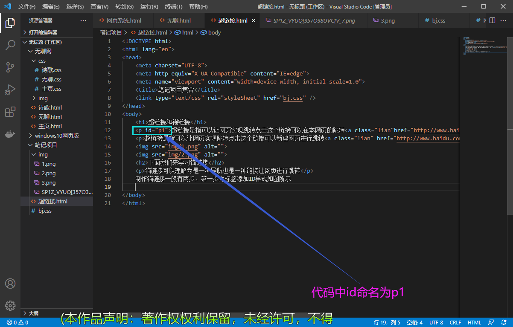
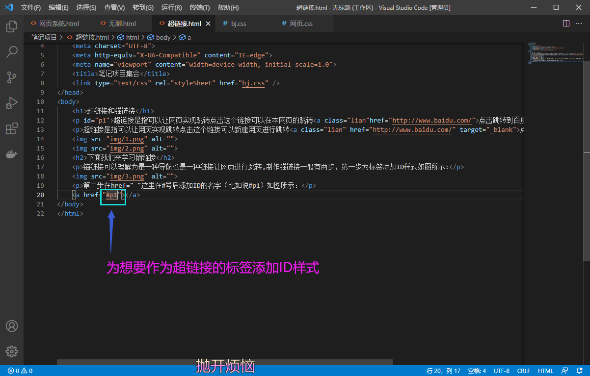

超链接和锚链接
超链接是指可以让网页实现跳转点击这个链接可以在本网页的跳转点击跳转到百度
超链接是指可以让网页实现跳转点击这个链接可以新建网页进行跳转点击跳转到百度


锚链接可以理解为是一种导航也是一种链接让网页进行跳转,制作锚链接一般有两步，第一步为标签添加ID样式如图所示:
第二步在href=" "这里在#号后添加ID的名字（比如说#p1）如图所示：
background-image: url();(添加背景图片)
align="center"(文字居中)
text-align:center ; 文字居中*/
font-size:1px;/*文字大小*/
float：left； /*浮动*/
头:hedader
内容:content/container
尾：footer
导航：nav
侧边栏：sidebar
栏目：column
页面外围控制整体布局宽度：wrapper
左、 右 、中：left、right、center
(登录条：loginbar)
标志：logo
广告：banner
页面主体：main
热点：hot
新闻：news
下载：download
子导航：subnav
搜索：search
友情链接：friendlink
页脚：footer
版权：copyright
滚动：scroll
内容：content
标签：tags
文章列表：list
提示信息：msg
小技巧：tips
栏目标题：title
加入：joinus
指南：guide
服务：service
注册:regsiter
向右排列：dislpay: inline-block 可以是文字（图片）向右排列
位移：transform: translateY(201px) translateX(201px) 【Y(上下)、X（左右）X轴位移】
个人QQ号:2777368400如果代码有什么错误的地方还欢迎大家来指正错误呀